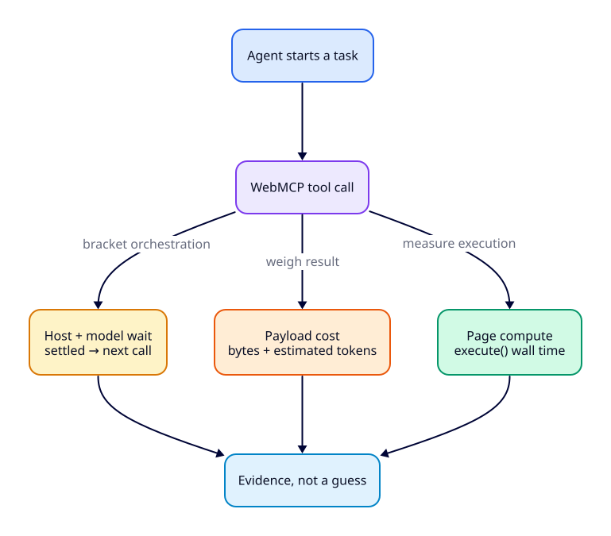
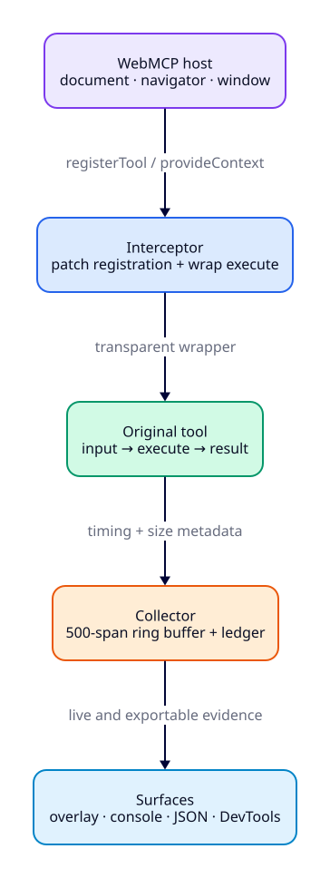
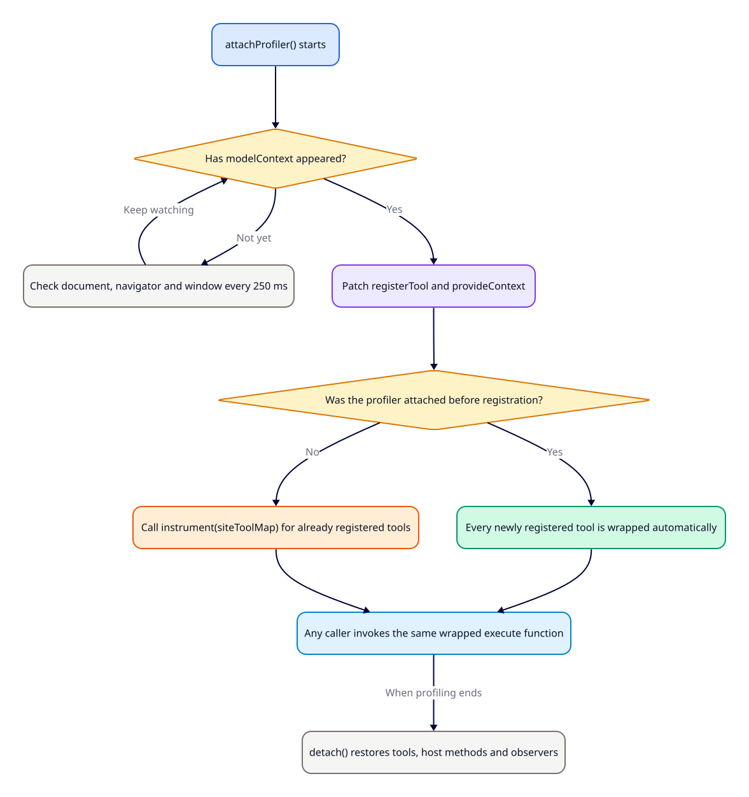
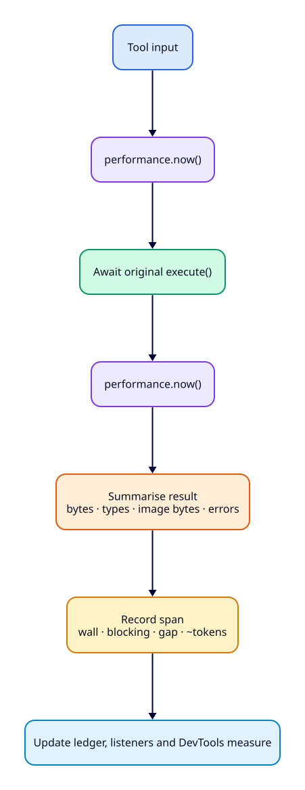
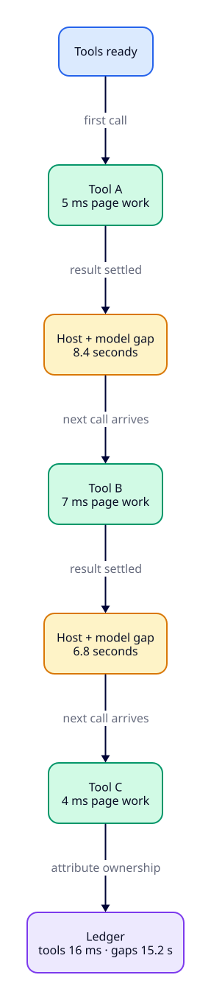
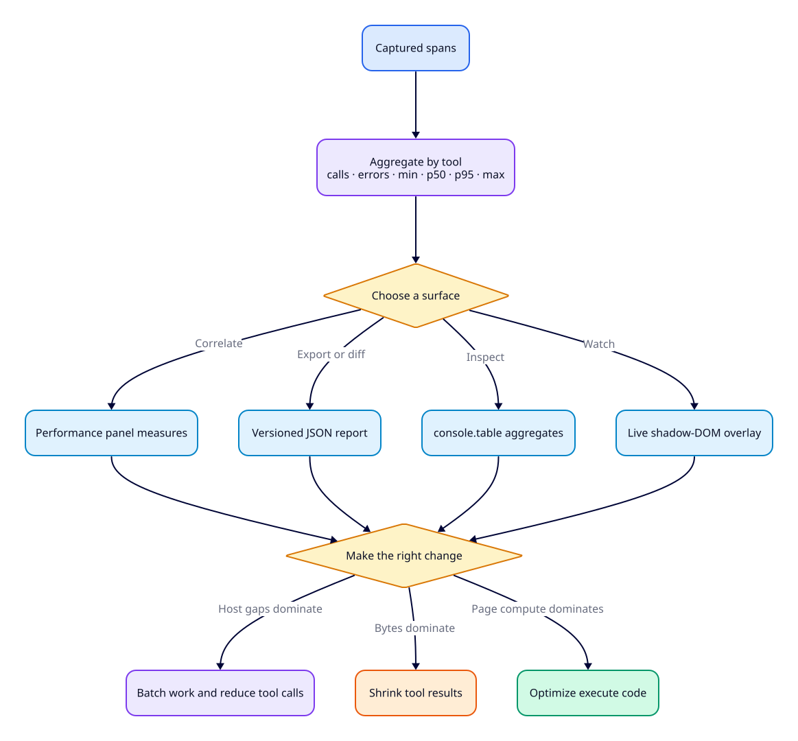
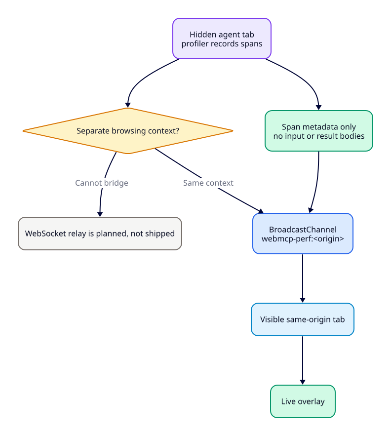

Tool execution
Wall time and Long-Task overlap reveal expensive code, layout, encoding or blocking work inside the page.
Open source · zero dependencies · v__WEBMCP_PROFILER_VERSION__
A drop-in performance analyser for WebMCP tools. It separates page compute, payload weight and host/model wait—so “the agent feels slow” becomes a precise, fixable diagnosis.
The problem
A stopwatch around execute() sees only the page-owned part of a call.
It misses the cost of putting a result into model context and the seconds spent
between calls. The profiler records enough evidence to assign each delay to the
right owner—and therefore the right fix.

Wall time and Long-Task overlap reveal expensive code, layout, encoding or blocking work inside the page.
Approximate input and result sizes, content types, image size and estimated tokens reveal oversized tool contracts.
The settled-to-next-invoke interval brackets orchestration and reasoning time that the page cannot see directly.
Quickstart
The standard gate keeps production overhead at zero until profiling is requested.
The mode persists in localStorage, which matters when an app rewrites
its URL or an agent can only be steered to a page once.
// npm install webmcp-profiler
import { maybeAttachProfiler } from "webmcp-profiler/attach"
maybeAttachProfiler()?perf=1Enable profiling and remember the mode for this origin.
?perf=overlayEnable profiling and open the floating live panel immediately.
?perf=0Remove the saved mode and return the page to its normal state.
<script src="https://cdn.jsdelivr.net/npm/webmcp-profiler@__WEBMCP_PROFILER_VERSION__/dist/webmcp-profiler.iife.js"></script>import { attachProfiler } from "webmcp-profiler"
const profiler = attachProfiler({
buffer: 500,
relay: true,
overlay: false,
})__webmcpPerf.table() // per-tool calls, percentiles, payload and errors
__webmcpPerf.overlay() // toggle the live panel
__webmcpPerf.report() // return the complete versioned document
__webmcpPerf.export() // download that document as JSONArchitecture
The profiler watches all current WebMCP registry locations—document,
navigator and window. It wraps the tool object in place,
so the host, the app and any test harness all invoke the same measured function.
Original inputs, return values, thrown errors and extra host arguments pass through unchanged.


Agent hosts may inject modelContext after the app has started. The watcher stays alive so late host injection is still captured. A host that never appears is simply left untouched.
One call, one span
Each wrapper brackets the original execute(), summarises the result,
records a span and returns the original result. Long Tasks are attributed later
when Chromium delivers their observer entries.

| Span field | What it tells you | Source |
|---|---|---|
tool, seq | Tool identity and call order in this session. | Registration metadata + collector counter |
invokedAt, settledAt | The exact performance.now() window around the awaited tool. | Wrapper clocks |
wallMs | End-to-end duration of the page’s execute(). | Settled minus invoked |
blockingMs | Long-Task overlap attributed to that call window. Chromium-only; otherwise zero. | PerformanceObserver |
inputBytes, resultBytes | Approximate JSON size entering and leaving the tool; exact for typical ASCII-heavy payloads. | JSON.stringify string length |
contentTypes, imageBytes | Result composition and encoded image-string length. | MCP content summary |
estTokens | A directional model-context estimate: result bytes divided by four. | Heuristic, rounded up |
gapSincePrevCallMs | Time between the previous result settling and this call arriving. | Session ledger |
isError, error | Tool-reported failures and thrown exceptions. | Result flag or caught error |
synthetic | Reserved distinction between live and benchmark calls; current captured calls are false. | Profiler |
The differentiator
A page cannot inspect model reasoning or host internals. It can still prove what did not happen inside the page. The ledger sums the positive time between one result settling and the next invocation arriving, then reports it separately from tool work and payload size.

Tool execution was already in the 1–15 ms range. The profiler exposed a roughly 130 KB preview image payload, which was reduced to a roughly 7 KB JPEG. It also showed that perceived delay was dominated by model round trips, not page compute.
Surfaces
Every surface reads the same collector. The overlay is lazy-loaded into Shadow
DOM, console commands work without UI, and every call emits a native
performance.measure named webmcp:<tool>#<seq>.

| Console API | Purpose |
|---|---|
spans() | Read the current immutable view of captured span records. |
aggregates() | Get per-tool calls, errors, min, p50, p95, max, blocking and payload totals. |
table() | Print per-tool aggregates with console.table. |
report() | Return a stable webmcp-perf-report/1 JSON document. |
export() | Download the report as a timestamped JSON file. |
overlay() | Lazy-create, show or hide the floating live table. |
instrument(toolMap) | Retrofit a site-exposed { name: tool } map after registration. |
reset() | Clear captured spans and call totals while retaining host and registration facts. |
detach() | Restore every original tool and registry method, stop observers and remove the global API. |
Hidden agent browsers
With relay enabled—the default—each span is mirrored through a same-origin
BroadcastChannel. The visible overlay currently shows a live count of
spans received from another tab; merging remote spans into its per-tool table is
future work. Only span metadata moves—tool inputs and result bodies do not.

Reports and CI
report() returns session metadata, the ledger, per-tool aggregates and
every retained span under a versioned format identifier. Reports can be diffed in
CI or ingested by a dashboard without scraping the overlay.
{
"format": "webmcp-perf-report/1",
"session": { "origin": "https://example.com", "userAgent": "…", "generatedAt": "…" },
"ledger": { "registeredTools": ["search", "checkout"], "totals": { "calls": 12, "hostGapMs": 39120 } },
"tools": [{ "tool": "search", "p50Ms": 4.2, "p95Ms": 8.1 }],
"spans": [{ "tool": "search", "wallMs": 4.9, "estTokens": 194 }]
}Profile real calls from Chrome, ChatGPT or another host and preserve the exact sequence, payload shape and gaps the page observed.
The repository’s current npm run perf harness uses Playwright to invoke tools through modelContext. A schema-driven bench() API is planned for the package.
Truthful scope
The profiler is useful now, but it is deliberately early. The page keeps current behavior separate from the larger analyser described in the design specification.
bench()The shipped profiler records sizes, timings, content-type counts and error strings—not tool input or result bodies. Data stays in memory unless the developer explicitly exports a report. Relay messages contain spans, never payload bodies.
Known limitations: a reload starts a fresh buffer; Long-Task attribution is Chromium-only; the current “byte” fields use JavaScript string length and are approximate for non-ASCII or base64 data; token count is that approximate result size divided by four; already-registered tools require an exposed map; the overlay counts but does not aggregate relayed spans; BroadcastChannel cannot cross isolated browsing contexts; and host gaps identify time outside the page without claiming whether the host or model consumed each millisecond.
The judge takeaway
The profiler makes agent-facing performance visible with a tiny, removable layer. It helped turn one vague latency complaint into a concrete payload fix—and proved where the remaining time really lived.